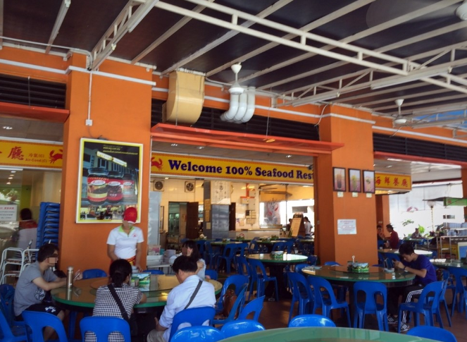
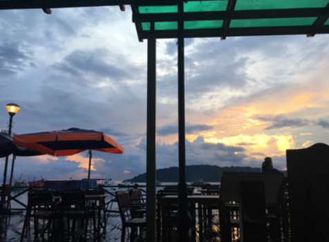
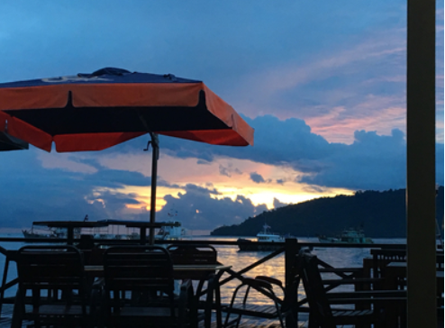
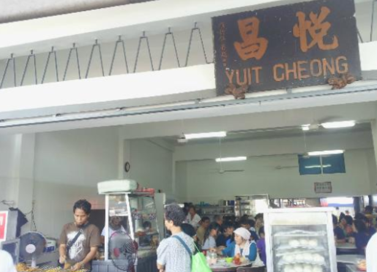

ღ 웰컴씨푸드
한국보다 상대적으로 해산물을 저렴한 가겨에 즐길 수있어서 해산물을 좋아하는 사람들에게 사랑받는 코타키나발루 맛집이다.
칠리크랩과 버터새우,크림소스 타이거 새우가 맛있다.
ღ 워터프론트 레스토랑
워터프론트는 부담스럽지 않은 가격에 선셋을 감상하면서 식사할 수있는 레스토랑이 줄지어 있어서 선택의 폭이 넓다.
여러 레스토랑이 있지만 태국 요리를 판매하는 ‘마이야이타이 오키드 레스토랑 Mai Yai Thai Orchid Restaurant’과 이탈리안 요리를 판매하는 ‘구스토 푸드 앤 와인 Gusto Food & Wine’을 많이 방문한다.
여러 레스토랑이 있지만 태국 요리를 판매하는 ‘마이야이타이 오키드 레스토랑 Mai Yai Thai Orchid Restaurant’과 이탈리안 요리를 판매하는 ‘구스토 푸드 앤 와인 Gusto Food & Wine’을 많이 방문한다.
|  |  |
ღ 유잇청
20년의 전통을 자랑하는 코타키나발루의 맛집이다.
현지 분위기가 느껴지며 인기 메뉴로는 카야 토스트, 쌀국수와 사테가 유명하다.

현지 분위기가 느껴지며 인기 메뉴로는 카야 토스트, 쌀국수와 사테가 유명하다.